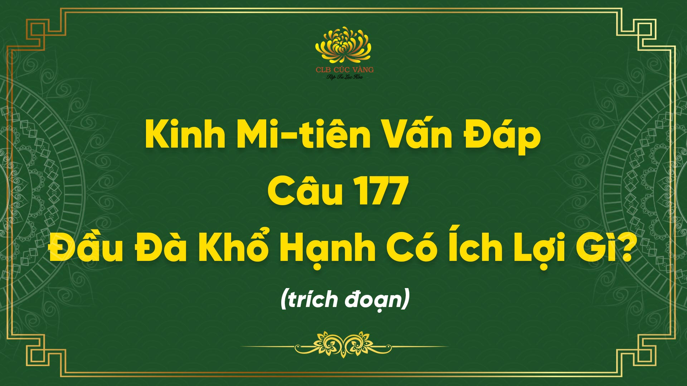
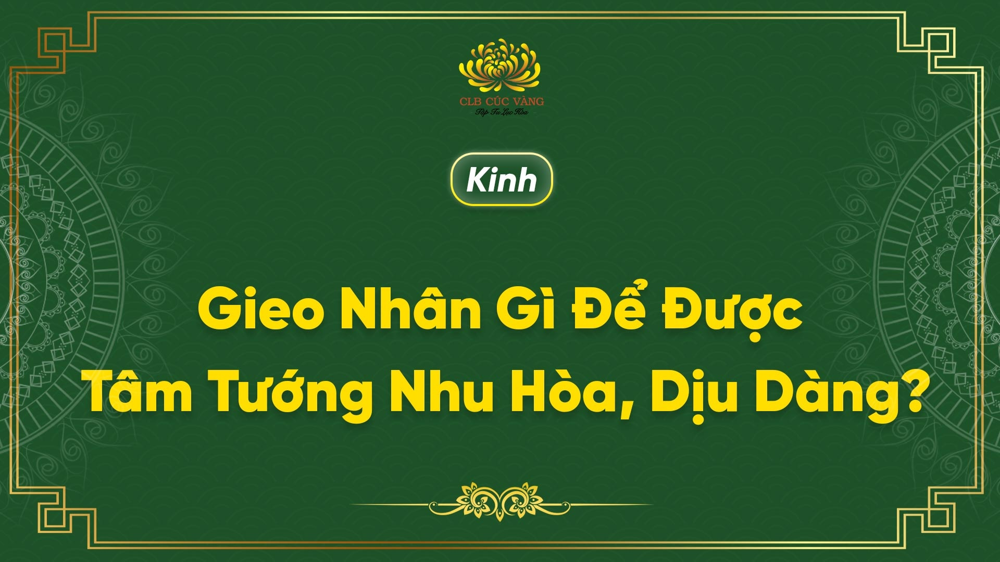

Có Phật Không? - Kinh Mi Tiên Vấn Đáp
Bần tăng dầu chưa thấy Đức Phật; các bậc thầy của bần tăng cũng không thấy Phật; nhưng Đức Phật vẫn có, vì kinh sách, bia ký còn ghi chép sử tích và giáo pháp của ngài, lại còn nhiều vị Thánh tăng A-la- hán kể lại nữa
Chi tiết Làm Sao Biết Niết Bàn Là Tối Thượng Lạc? - Kinh Mi Tiên Vấn Đáp
- Chưa đắc niết-bàn thì làm sao biết được niết-bàn là tối thượng lạc, đại đức ?
Chi tiết Pháp Xuất Thế Gian - Kinh Mi Tiên Vấn Đáp
Pháp xuất thế gian thì phải được diễn đạt và thông hiểu bằng tuệ xuất thế gian. Pháp xuất thế gian không thể lãnh hội bằng phàm tuệ được.
Chi tiết Thời Gian Tái Sanh - Kinh Mi Tiên Vấn Đáp
- Thưa đại đức, ví dụ có hai người ở đây cùng chết, một người được sanh lên cõi trời phạm thiên, một người đầu thai vào xứ Kasmir kế cận đây, thế thì ai sẽ đến trước?
Chi tiết Kẻ Trí Làm Điều Ác Tội Báo Nhỏ, Người Ngu Làm Điều Ác Tội Báo Lớn - Kinh Mi Tiên Vấn Đáp
Người ngu làm việc ác, không biết đấy là ác, lún sâu vào ác nên tội báo sẽ nặng. Còn người trí biết đấy là ác, cũng làm ác; nhưng tìm cách này cách kia để cho cái ác ấy nó nhẹ đi
Chi tiết Nước Dựa Khí - Kinh Mi Tiên Vấn Đáp
- Các vị sa-môn trong hàng ngũ của đại đức thường thuyết lý rằng: đất dựa nước, nước dựa khí, khí dựa hư không. Điều ấy sao khó tin đến vậy?
Chi tiết
Lửa Địa Ngục - Kinh Mi Tiên Vấn Đáp
Đức vua Mi-lan-đà lại hỏi: - Có nhiều vị tỳ kheo đã thuyết cho trẫm nghe rằng: lửa địa ngục nóng hơn lửa thế gian hằng vạn lần.
Chi tiết
Nhân Sanh Giác Ngộ - Kinh Mi Tiên Vấn Đáp
Nhân để sanh giác ngộ có mấy pháp hở đại đức? Nó có bảy nhân sanh gọi là thất giác chi, gồm có niệm, trạch pháp, tấn, hỷ, an, định, xả - tâu đại vương
Chi tiết
Bất Bình Đẳng Sai Khác Của Chúng Sanh Là Do Nghiệp - Kinh Mi Tiên Vấn Đáp
Tất cả chúng sanh đều được sanh ra bởi nghiệp, nghiệp là của mình, phải thọ quả của nghiệp; nghiệp là tạo tác, là chủ tể muôn loài, nghiệp là giống dòng tông chủng, nghiệp tìm đến nhau, nghiệp dẫn dắt nhau đi
Chi tiết
Những Tâm Sở Đồng Sanh - Kinh Mi Tiên Vấn Đáp
Những tâm sở mà đại đức vừa trình bày như: xúc, tác ý, thọ, tưởng, tư... đều là những tâm sở đồng sanh trong một lúc hay sao? Thật ra, nó có trước có sau, nhưng vì tiến trình ấy
Chi tiết
Hành Tướng Của Tưởng (Sannalakkhana) - Kinh Mi Tiên Vấn Đáp
Vậy thì tưởng tâm sở? Là ghi nhận, chụp bắt cái tướng tổng quát của vật, ấy là tưởng, tâu đại vương.
Chi tiết
Hành Tướng Của Thọ (Vedanalakkhana) - Kinh Mi Tiên Vấn Đáp
Thế thọ tâm sở có hành tướng thế nào, ra sao, để dễ nhận biết, thưa đại đức? Khi nào có khổ, lạc, xả, thì đấy được gọi là thọ tâm sở, tâu đại vương.
Chi tiết
Hành Tướng Của Xúc (Phassalakkhana) - Kinh Mi Tiên Vấn Đáp
Khi nhãn thức sanh, không phải chỉ có xúc tâm sở cùng sanh mà những tâm sở khác cùng biến hành sanh khởi: thọ, tưởng, tư, nhất tâm...
Chi tiết
Nguyên Nhân Của Thời Gian - Kinh Mi Tiên Vấn Đáp
Phàm cái gì có quả thì phải có nhân. Vậy nguyên nhân đâu mà có thời gian quá khứ, hiện tại và vị lai?
Chi tiết
Tự Ngã Trong Thân? - Kinh Mi Tiên Vấn Đáp
Tâu đại vương! Con mắt tiếp xúc với sắc nhưng chưa chắc con mắt ấy biết rõ sắc ấy là xanh, đỏ, trắng, vàng đâu, nếu không có nhãn thức.
Chi tiết
Thời Gian Tối Sơ? - Kinh Mi Tiên Vấn Đáp
Trái chín rụng, hạt rơi xuống thành cây khác, trái khác; và cứ thế tiếp tục đến vô cùng, vô tận. Đại vương có thể nào tìm ra gốc nguồn của trái cây kia chăng?
Chi tiết
Có Rồi Không, Không Rồi Có! - Kinh Mi Tiên Vấn Đáp
Ví như có một giống cây, chưa mọc thì chưa có, đến khi người ta đem giống ấy, trồng tỉa nên cây, hoa, lá, trái. Như thế được hiểu trước đây là không mà bây giờ là có vậy, tâu đại vương!
Chi tiết
Pháp Hành Thì Sao? - Kinh Mi Tiên Vấn Đáp
Pháp hành này phải được hiểu là những pháp cấu tạo ở trong tâm... Khi có lục căn, lục trần thì có lục xúc. Có xúc thì có thọ, ái, hữu, sinh, lão tử, sầu bi khổ ưu não
Chi tiết
Hành Tướng Của Tư Tác (Cetanalakkhana) - Kinh Mi Tiên Vấn Đáp
Trong thế gian này, có một số người tư tác làm điều ác, xui khiến kẻ khác làm điều ác; đến khi chấm dứt thọ mạng, họ đọa vào bốn đường khổ... tư tác này chính là nghiệp
Chi tiết
Hành Tướng Của Tầm (Vitakkalakkhana) - Kinh Mi Tiên Vấn Đáp
Tầm chính là tìm kiếm. Đi tìm kiếm đối tượng là tầm, tâu đại vương. Ví như con ong bay đi tìm kiếm đóa hoa để hút mật, nó thấy đóa hoa, bay quanh đóa hoa, tìm chỗ để đậu xuống trên đóa hoa
Chi tiết
Thời Gian Và Không Còn Thời Gian - Kinh Mi Tiên Vấn Đáp
Thời gian thường trải qua ba thì: quá khứ, hiện tại, vị lai. Quá khứ thì vô thỉ (không có khởi đầu) vị lai thì vô chung (không có chấm dứt), nên nói quá khứ, vị lai đều vô cùng, vô tận; còn hiện tại thì chỉ là cái chớp mắt thoáng trôi, đại vương nên có ý niệm về thời gian như vậy.
Chi tiết
Tự Nhiên Sanh? - Kinh Mi Tiên Vấn Đáp
Không có vật gì trên thế gian này mà do tự nhiên sanh cả... chẳng có vật gì do tự nhiên sanh, do tự nó sanh mà do sự kết hợp nhiều yếu tố, nhiều điều kiện khác, tâu đại vương.
Chi tiết
Về Năm Giác Quan - Kinh Mi Tiên Vấn Đáp
Ngũ căn tức là năm giác quan của con người, phát sanh do nghiệp... Thân tâm là cái chung nhau nhưng năm giác quan sanh ra từ đấy, nó có những chức năng riêng biệt, khác nhau, tâu đại vương!
Chi tiết
Nhãn Thức Và Tâm Thức (Cakkhu Vinnana - Mano Vinnana) - Kinh Mi Tiên Vấn Đáp
Khi nhãn thức sanh khởi thì tâm thức có cùng sanh khởi không? Thưa, có. Vậy cái nào trước, cái nào sau? Nhãn thức sanh trước, tâm thức sanh sau, tâu đại vương!
Chi tiết... Bấy giờ, Tôn giả A Nậu Lâu Ðà ở Kỳ Viên, tại vườn ông Cấp Cô Độc, thức dậy khi đêm vừa mới sáng, đang tụng đọc pháp cú. Khi ấy, một nữ Dạ xoa, mẹ của Piyankara dỗ cho con nín như sau: Này Piyankara chớ có sinh tiếng động...
Chi tiết
Tùy thời nghe pháp có năm công đức. Tùy thời lãnh thọ chẳng mất thứ lớp. Thế nào là năm? Ðiều chưa từng nghe sẽ được nghe; điều đã được nghe, đọc tụng lần nữa; cái thấy không bị tà, lệch; không có hồ nghi; liền hiểu nghĩa thậm thâm.
Chi tiết
Nghe pháp có năm lợi ích này. Thế nào là năm? Được nghe điều chưa nghe, làm cho trong sạch điều được nghe, đoạn trừ nghi, làm cho tri kiến chánh trực, làm cho tâm tịnh tín.
Chi tiếtCông Đức Nhiễu Tháp - Kinh Bồ-Tát Bản Hạnh
Bà-la-môn này gặp Phật, liền vui mừng, nhiễu Phật một vòng với tâm thanh tịnh. Nhờ công đức ấy, từ nay đến hai mươi lăm kiếp về sau, ông ta không bị đọa vào đường ác
Chi tiết
Kinh Mi-tiên vấn đáp, câu số 177: Đầu đà khổ hạnh có ích lợi gì? (Trích đoạn)
Người muốn thực hành hạnh đầu đà cần có mười đức tính và 28 đức tính cao thượng siêu việt của mười ba pháp đầu đà khổ hạnh
Chi tiết
Gieo Nhân Gì Để Được Tâm Tướng Nhu Hòa, Dịu Dàng? - Kinh Đại Ca Diếp Vấn Đại Bảo Tích Chánh Pháp
Này Tôn giả Ca-diếp! Bốn pháp này làm cho các Bồ-tát được tướng nhu hòa dịu dàng.. Một là đã mắc tội mà được phát lồ thì quyết không che giấu, dốc xa lìa lỗi lầm. Hai là lời nói phải chân thật, thà mất ngôi vua, hủy hoại sự giàu sang, tiêu tan của cải, xả bỏ thân mạng,
Chi tiết